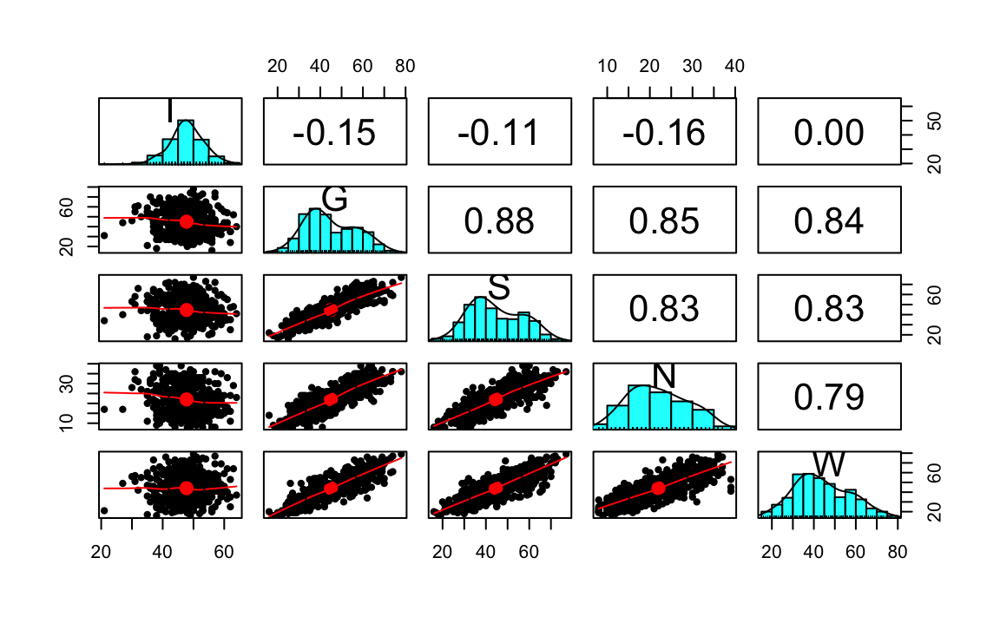

29 Il modello statistico dell’analisi fattoriale
Prerequisiti
- Leggere il capitolo 6, Factor Analysis and Principal Component Analysis, del testo Principles of psychological assessment di Petersen (2024).
Concetti e Competenze Chiave
Preparazione del Notebook
29.1 Modello monofattoriale
Il punto di partenza dell’analisi fattoriale esplorativa è rappresentato da una marice di dimensioni \(p \times p\) (dove \(p\) è il numero di variabili osservate) che contiene i coefficienti di correlazione (o di covarianza) tra le variabili. Il punto di arrivo è rappresentato da una matrice di dimensioni \(p \times k\) (dove \(k\)) è il numero di fattori comuni che contiene i coefficienti (le saturazioni) che esprimono la relazione tra i fattori e le variabili osservate. Considereremo ora il modello matematico dell’analisi fattoriale esplorativa, con un solo fattore comune, che rappresenta il caso più semplice.
Con \(p\) variabili manifeste \(Y_i\), il modello ad un fattore comune può essere espresso algebricamente nel modo seguente:
\[ Y_i = \mu_i + \lambda_{i} \xi + \delta_i \qquad i=1, \dots, p \]
dove \(\xi\) rappresenta il fattore latente, chiamato anche fattore comune, poiché è comune a tutte le \(Y_i\), i \(\delta_i\) sono invece specifici di ogni variabile osservata e per tale ragione vengono chiamati fattori specifici o unici, e infine i \(\lambda_i\) sono detti saturazioni (o pesi) fattoriali poiché consentono di valutare il peso del fattore latente su ciascuna variabile osservata. Si suole assumere per comodità che \(\mu=0\), il che corrisponde a considerare le variabili \(Y_i\) come ottenute dagli scarti dalle medie \(\mu_i\) per \(i = 1, \dots, p\):
\[ Y_i -\mu_i = \lambda_i \xi + \delta_i. \]
Si assume che il fattore comune abbia media zero, \(\mathbb{E}(\xi)=0\), e varianza unitaria, \(\mathbb{V}(\xi)=1\), che i fattori specifici abbiano media zero, \(\mathbb{E}(\delta_j)=0\), e varianza \(\mathbb{V}(\delta_j)=\psi_{i}\), che i fattori specifici siano incorrelati tra loro, \(\mathbb{E}(\delta_i \delta_k)=0\), e che i fattori specifici siano incorrelati con il fattore comune, \(\mathbb{E}(\delta_i \xi)=0\).
In questo modello, poiché i fattori specifici sono tra loro incorrelati, l’interdipendenza tra le variabili manifeste è completamente spiegata dal fattore comune. Dalle ipotesi precedenti è possibile ricavare la covarianza tra \(Y_i\) e il fattore comune, la varianza della \(i\)-esima variabile manifesta \(Y_i\) e la covarianza tra due variabili manifeste \(Y_i\) e \(Y_k\).
29.2 Covarianza tra un indicatore e il fattore comune
Dal modello monofattoriale è possibile determinare l’espressione della covarianza teorica tra una variabile manifesta \(Y_i\) e il fattore comune \(\xi\):
\[ Cov(Y_i,\xi)=\mathbb{E}(Y_i \xi)-\mathbb{E}(Y_i)\mathbb{E}(\xi). \]
Dato che \(\mathbb{E}(\xi)=0\), possiamo scrivere
\[ \begin{equation} \begin{aligned} Cov(Y_i,\xi) &= \mathbb{E}(Y_i \xi)=\mathbb{E}[(\lambda_i \xi + \delta_i) \xi]\notag\\ &=\mathbb{E}(\lambda_i \xi^2 + \delta_i \xi)\notag\\ &=\lambda_i\underbrace{\mathbb{E}(\xi^2)}_{\mathbb{V}(\xi)=1} + \underbrace{\mathbb{E}(\delta_i \xi)}_{Cov(\delta_i, \xi)=0}\notag\\ &= \lambda_i.\notag \end{aligned} \end{equation} \]
Nel modello a un solo fattore, dunque, la saturazione \(\lambda_j\) rappresenta la covarianza la variabile manifesta \(Y_i\) e il fattore comune \(\xi\) e indica l’importanza del fattore nel determinare il punteggio osservato. Se le variabili \(Y_i\) sono standardizzate, la saturazione fattoriale \(\lambda_i\) corrisponde alla correlazione tra \(Y_i\) e \(\xi\).
29.3 Espressione fattoriale della varianza
Nell’ipotesi che le variabili \(Y_i\) abbiano media nulla, la varianza di \(Y_i\)
\[ \begin{equation} \mathbb{V}(Y_i) = \mathbb{E}(Y_i^2) -[\mathbb{E}(Y_i)]^2 = \mathbb{E}(Y_i^2)\notag \end{equation} \]
è data da
\[ \begin{equation} \begin{aligned} \mathbb{V}(Y_i) &= \mathbb{E}[(\lambda_i \xi + \delta_i)^2 ]\notag\\ &=\lambda_i^2 \underbrace{\mathbb{E}(\xi^2) }_{\mathbb{V}(\xi)=1} + \underbrace{\mathbb{E}(\delta_i^2) }_{\mathbb{V}(\delta_i)=\psi_{i}} + 2\lambda_i \underbrace{\mathbb{E}(\xi \delta_i) }_{Cov(\xi, \delta_{i})=0}\notag\\ &=\lambda^2_i + \psi_{i}. \end{aligned} \end{equation} \]
La quantità \(\lambda^2_i\) è denominata comunalità della \(i\)-esima variabile manifesta e corrisponde alla quota della varianza della \(Y_i\) spiegata dal fattore comune. Di conseguenza \(\psi_{i}\) è la parte residua della varianza di \(Y_i\) non spiegata dal fattore comune ed è denominata unicità di \(Y_i\). Nel caso di variabili standardizzate, l’unicità diventa uguale a
\[ \psi_{i}=1-\lambda^2_i. \]
In definitiva, la varianza totale di una variabile osservata può essere divisa in una quota che ciascuna variabile condivide con le altre variabili ed è spiegata dal fattore comune (questa quota è chiamata comunalità ed è uguale uguale al quadrato della saturazione della variabile osservata nel fattore comune, ovvero \(h^2_i = \lambda_i^2\)), e in una quota che è spiegata dal fattore specifico (questa parte è chiamata unicità ed è uguale a \(u_i = \psi_{i}\)).
Esempio. Riprendiamo l’analisi della matrice di correlazioni di Spearman. Nell’output prodotto dalla funzione factanal() viene riportata la quantità denominata SS loadings. Tale quantità indica la porzione della varianza totale delle 4 variabili manifeste che viene spiegata dal fattore comune. Ciascuna variabile standardizzata contribuisce con un’unità di varianza; nel caso presente, dunque la varianza totale è uguale a 4. Si ricordi che, nella statistica multivariata, per varianza totale si intende la somma delle varianze delle variabili manifeste (nel linguaggio dell’algebra matriciale questa quantità corrisponde alla traccia della matrice di covarianze). La quota della varianza totale spiegata dal modello, invece, è data dalla somma delle comunalità delle quattro variabili, ovvero dalla somma delle saturazioni fattoriali innalzate al quadrato.
Spearman <- matrix(c(
1.0, .78, .70, .66,
.78, 1.0, .64, .54,
.70, .64, 1.0, .45,
.66, .54, .45, 1.0
),
byrow = TRUE, ncol = 4
)
rownames(Spearman) <- c("C", "E", "M", "P")
colnames(Spearman) <- c("C", "E", "M", "P")
Spearman |>
print()
#> C E M P
#> C 1.00 0.78 0.70 0.66
#> E 0.78 1.00 0.64 0.54
#> M 0.70 0.64 1.00 0.45
#> P 0.66 0.54 0.45 1.00Eseguiamo l’analisi fattoriale:
fm <- factanal(covmat = Spearman, factors = 1)
fm |>
print()
#>
#> Call:
#> factanal(factors = 1, covmat = Spearman)
#>
#> Uniquenesses:
#> C E M P
#> 0.086 0.329 0.460 0.539
#>
#> Loadings:
#> Factor1
#> C 0.956
#> E 0.819
#> M 0.735
#> P 0.679
#>
#> Factor1
#> SS loadings 2.587
#> Proportion Var 0.647
#>
#> The degrees of freedom for the model is 2 and the fit was 0.023Le saturazioni fattoriali sono:
Facendo il prodotto interno otteniamo:
In termini proporzionali, la quota della varianza totale delle variabile manifeste che viene spiegata dal modello ad un fattore comune è dunque uguale a \(2.587 / 4 = 0.647\). Questa quantità è indicata nell’output con la denominazione Proportion Var.
Si dice unicità (uniqueness) la quota della varianza della variabile considerata che non viene spiegata dalla soluzione fattoriale:
La comunalità (ovvero, la quota di varianza di ciascuna variabile manifesta che viene spiegata dal fattore comune) può essere trovata come:
oppure con
29.4 Covarianza tra due variabili manifeste
Nell’ipotesi che le variabili \(Y_i\) abbiano media nulla, la covarianza tra \(Y_i\) e \(Y_k\)
\[ Cov(Y_i, Y_k)=\mathbb{E}(Y_i Y_k) - \mathbb{E}(Y_i)\mathbb{E}(Y_k)=\mathbb{E}(Y_i Y_k) \]
è uguale al prodotto delle corrispondenti saturazioni fattoriali:
\[ \begin{equation} \begin{aligned} Cov(Y_i, Y_k) &= \mathbb{E}(Y_i Y_k) \notag\\ & =\mathbb{E}[(\lambda_i \xi + \delta_i)(\lambda_k \xi + \delta_k)]\notag\\ &=\mathbb{E}(\lambda_i\lambda_k\xi^2 + \lambda_i \xi \delta_k + \lambda_k \delta_i \xi + \delta_i \delta_k)\notag\\ &=\lambda_i\lambda_k\underbrace{\mathbb{E}(\xi^2)}_{\mathbb{V}(\xi)=1}+\lambda_i\underbrace{\mathbb{E}(\xi \delta_k)}_{Cov(\xi, \delta_k) =0}+\notag\\ \;&+\lambda_k\underbrace{\mathbb{E}(\delta_i \xi)}_{Cov(\delta_i, \xi) =0} +\underbrace{\mathbb{E}(\delta_i \delta_k)}_{Cov(\delta_i, \delta_k)=0}\notag\\ &=\lambda_i\lambda_k. \end{aligned} \end{equation} \]
29.5 Correlazioni osservate e correlazioni riprodotte dal modello
In generale possiamo affermare che il modello monofattoriale è adeguato se si verifica che \(Cov(Y_i, Y_k \mid \xi) = 0\) (\(i, k = 1, \dots,p; \; i\neq k\)), ossia se il fattore comune spiega tutta la covarianza tra le variabili osservate. La matrice di correlazioni riprodotte dal modello è chiamata \(\boldsymbol{\Sigma}\) e può essere espressa come:
\[ \boldsymbol{\Sigma} = \boldsymbol{\Lambda} \boldsymbol{\Lambda}^\prime + \boldsymbol{\Psi} \]
In altri termini, il modello monofattoriale è adeguato se è nulla la differenza tra la matrice di correlazioni osservate e la matrice di correlazioni riprodotte dal modello. Per i dati di Spearman, le correlazioni riprodotte dal modello ad un fattore sono
La matrice delle differenze tra le correlazioni campionarie e quelle riprodotte è
Lo scarto maggiore tra le correlazioni campionarie e quelle riprodotte è uguale a 0.049. Si può dunque concludere che il modello monofattoriale spiega in maniera ragionevole i dati di Spearman.
29.6 Bontà di adattamento del modello ai dati
La verifica della bontà di adattamento del modello ai dati si determina mediante un test statistico che valuta la differenza tra la matrice di correlazioni (o di covarianze) osservata e la matrice di correlazioni (o covarianze) predetta dal modello fattoriale. L’ipotesi nulla che viene valutata è che la matrice delle correlazioni residue sia dovuta semplicemente agli errori di campionamento, ovvero che la matrice di correlazioni predetta dal modello \(\boldsymbol{\Sigma}(\theta)\) sia uguale alla matrice di correlazioni \(\boldsymbol{\Sigma}\) nella popolazione.
La statistica test \(v\) è una funzione della differenza tra la matrice riprodotta \(\boldsymbol{S}(\theta)\) e quella osservata \(\boldsymbol{S}\)
\[ v = f\left[\boldsymbol{S}(\theta) - \boldsymbol{S}\right] \]
e si distribuisce come una \(\chi^2\) con \(\nu\) gradi di libertà
\[ \nu = p(p+1)/ 2 - q, \]
dove \(p\) è il numero di variabili manifeste e \(q\) è il numero di parametri stimati dal modello fattoriale (ovvero, \(\lambda\) e \(\psi\)).
La statistica \(v\) assume valore 0 se i parametri del modello riproducono esattamente la matrice di correlazioni tra le variabili nella popolazione. Tanto maggiore è la statistica \(v\) tanto maggiore è la discrepanza tra le correlazioni osservate e quelle predette dal modello fattoriale.
Un risultato statisticamente significativo (es., \(p\) < .05) – il quale suggerisce che una tale differenza non è uguale a zero – rivela dunque una discrepanza tra il modello e i dati. Il test del modello fattoriale mediante la statistica \(\chi^2\) segue dunque una logica diversa da quella utilizzata nei normali test di ipotesi statistiche: un risultato statisticamente significativo indica una mancanza di adattamento del modello ai dati.
L’applicazione del test \(\chi^2\) per valutare la bontà di adattamento del modello ai dati richiede che ciascuna variabile manifesta sia distribuita normalmente – più precisamente, richiede che le variabili manifeste siano un campione casuale che deriva da una normale multivariata. Questo requisito non è facile da rispettare in pratica.
Tuttavia, il limite principale della statistica \(\chi^2\) è che essa dipende fortemente dalle dimensioni del campione: al crescere delle dimensioni campionarie è più facile ottenere un risultato statisticamente significativo (ovvero, concludere che vi è un cattivo adattamento del modello ai dati). Per questa ragione, la bontà di adattamento del modello ai dati viene valutata da molteplici indici, non soltanto dalla statistica \(\chi^2\). Più comune è calcolare il rapporto \(\chi^2 / \nu\) e usare tale rapporto per valutare la bontà dell’adattamento. Valori minori di 3 o 4 suggeriscono che il modello ben si adatta ai dati.
29.7 L’errore standard della misurazione e il modello fattoriale
In questa sezione, approfondiamo la connessione tra l’errore standard di misurazione, un concetto fondamentale della Classical Test Theory (CTT), e l’applicazione del modello fattoriale. Questa connessione ci permette di reinterpretare l’errore standard di misurazione attraverso il prisma dell’analisi fattoriale. Procediamo con un’esposizione dettagliata.
All’interno della CTT, si afferma che il punteggio ottenuto (\(X\)) in un test corrisponde alla somma del valore vero (\(T\)) e dell’errore di misurazione (\(E\)), dove \(E\) è considerato una variabile casuale indipendente da \(T\). Se focalizziamo l’attenzione sul soggetto \(i\)-esimo, la formula diventa \(X_i = T_i + E_i\), con \(T_i\) rappresentante il valore vero e \(E_i\) l’errore di misurazione, quest’ultimo avente media zero.
Trasformiamo questa relazione nel contesto di un modello fattoriale monofattoriale che coinvolge \(p\) variabili osservate (o item). Per ogni item, la relazione è espressa come:
\[ \begin{equation} \begin{aligned} Y_{1i} &= \lambda_1 \xi_i + \delta_{1i} \notag\\ Y_{2i} &= \lambda_2 \xi_i + \delta_{2i} \notag\\ \dots\notag\\ Y_{pi} &= \lambda_p \xi_i + \delta_{pi}, \notag \end{aligned} \end{equation} \]
dove \(Y_{ji}\) rappresenta il punteggio osservato per l’item \(j\) del soggetto \(i\), \(\lambda_j\) è il carico fattoriale dell’item \(j\) sul fattore comune \(\xi_i\), e \(\delta_{ji}\) è l’errore unico associato all’item \(j\) per il soggetto \(i\).
Il punteggio totale \(X_i\) per il soggetto \(i\)-esimo deriva dalla somma dei punteggi di ciascun item, il che si traduce in:
\[ \begin{equation} \begin{aligned} X_i &= \sum_{j=1}^p Y_{ji} = \sum_{j=1}^p \lambda_j \xi_i + \sum_{j=1}^p \delta_{ji}\notag\\[12pt] &= \left( \sum_{j=1}^p \lambda_j \right) \xi_i + \sum_{j=1}^p \delta_{ji} \notag\\[12pt] &= T_i + E_i\notag \end{aligned} \end{equation} \]
Rispettando la struttura della CTT, la varianza del punteggio osservato \(X_i\) si decompone in due componenti fondamentali: la varianza del valore vero \(\sigma^2_{T_i}\) e la varianza dell’errore \(\sigma^2_{E_i}\). Nel contesto dell’analisi fattoriale, \(\sigma^2_{T_i}\) corrisponde al quadrato della somma dei carichi fattoriali:
\[ \begin{equation} \begin{aligned} \sigma^2_{T_i} &= \mathbb{V}\left[ \left( \sum_{j=1}^p \lambda_j \right) \xi_i \right]\notag\\ &= \left( \sum_{j=1}^p \lambda_j \right)^2 \mathbb{V}(\xi_i)\notag\\ &= \left( \sum_{j=1}^p \lambda_j \right)^2 \notag \end{aligned} \end{equation} \]
Inoltre, considerando la varianza dell’errore di misurazione \(\sigma^2_{E_i}\) nel contesto fattoriale, questa è equivalente alla somma delle varianze degli errori unici (\(\delta_{ji}\)), ovvero le unicità:
\[ \begin{equation} \begin{aligned} \sigma^2_{E_i} &= \mathbb{V}\left( \sum_{j=1}^p \delta_{ji} \right)\notag\\ &= \sum_{j=1}^p \mathbb{V}\left( \delta_{ji} \right)\notag\\ &= \sum_{j=1}^p \Psi_j\notag \end{aligned} \end{equation} \]
Pertanto, nel contesto dell’analisi fattoriale, l’errore standard di misurazione per il punteggio totale del test è quantificabile come la radice quadrata della somma delle unicità:
\[ \begin{equation} \sigma_{E} = \sqrt{\sum_{j=1}^p \Psi_j} \end{equation} \](eq-err-stnd-meas-FA)
Questo collegamento tra la CTT e l’analisi fattoriale offre una prospettiva rinnovata sull’errore standard di misurazione, arricchendo la nostra comprensione della precisione dei test psicometrici.
29.8 Un esempio concreto
Applichiamo ora il risultato precedente ad un caso concreto. Consideriamo i dati utilizzati nella validazione italiana del Cognitive Style Questionnaire - Short Form (CSQ-SF, Meins et al. 2012). Il CSQ-SF viene utilizzato per misurare la vulnerabilità all’ansia e alla depressione. È costituito da cinque sottoscale: Internality, Globality, Stability, Negative consequences e Self-worth.
Leggiamo i dati in \(\textsf{R}\):
Il numero di partecipanti è
n <- nrow(csq)
n
#> [1] 540Le statistiche descrittive si ottengono con la seguente istruzione:
psych::describe(csq, type = 2)
#> vars n mean sd median trimmed mad min max range skew kurtosis
#> I 1 540 47.8 5.78 48 47.9 4.45 21 64 43 -0.31 1.07
#> G 2 540 45.0 11.94 42 44.5 11.86 16 78 62 0.34 -0.70
#> S 3 540 44.6 12.18 42 44.2 13.34 16 77 61 0.27 -0.77
#> N 4 540 22.0 6.92 21 21.9 7.41 8 39 31 0.21 -0.74
#> W 5 540 44.0 13.10 43 43.7 13.34 16 79 63 0.31 -0.53
#> se
#> I 0.25
#> G 0.51
#> S 0.52
#> N 0.30
#> W 0.56Esaminiamo la matrice di correlazione:
psych::pairs.panels(csq) 
La sottoscala di Internality è problematica, come messo anche in evidenza dall’autore del test. La consideriamo comunque in questa analisi statistica.
Specifichiamo il modello unifattoriale nella sintassi di lavaan:
mod_csq <- "
F =~ NA*I + G + S + N + W
F ~~ 1*F
" Adattiamo il modello ai dati:
fit <- lavaan:::cfa(
mod_csq,
data = csq
)Esaminiamo i risultati:
summary(
fit,
standardized = TRUE,
fit.measures = TRUE
) |>
print()
#> lavaan 0.6-19 ended normally after 26 iterations
#>
#> Estimator ML
#> Optimization method NLMINB
#> Number of model parameters 10
#>
#> Number of observations 540
#>
#> Model Test User Model:
#>
#> Test statistic 46.716
#> Degrees of freedom 5
#> P-value (Chi-square) 0.000
#>
#> Model Test Baseline Model:
#>
#> Test statistic 2361.816
#> Degrees of freedom 10
#> P-value 0.000
#>
#> User Model versus Baseline Model:
#>
#> Comparative Fit Index (CFI) 0.982
#> Tucker-Lewis Index (TLI) 0.965
#>
#> Loglikelihood and Information Criteria:
#>
#> Loglikelihood user model (H0) -8741.781
#> Loglikelihood unrestricted model (H1) -8718.423
#>
#> Akaike (AIC) 17503.562
#> Bayesian (BIC) 17546.478
#> Sample-size adjusted Bayesian (SABIC) 17514.734
#>
#> Root Mean Square Error of Approximation:
#>
#> RMSEA 0.124
#> 90 Percent confidence interval - lower 0.093
#> 90 Percent confidence interval - upper 0.158
#> P-value H_0: RMSEA <= 0.050 0.000
#> P-value H_0: RMSEA >= 0.080 0.989
#>
#> Standardized Root Mean Square Residual:
#>
#> SRMR 0.033
#>
#> Parameter Estimates:
#>
#> Standard errors Standard
#> Information Expected
#> Information saturated (h1) model Structured
#>
#> Latent Variables:
#> Estimate Std.Err z-value P(>|z|) Std.lv Std.all
#> F =~
#> I 0.725 0.253 2.867 0.004 0.725 0.126
#> G -11.322 0.384 -29.481 0.000 -11.322 -0.949
#> S -11.342 0.398 -28.513 0.000 -11.342 -0.932
#> N -6.163 0.233 -26.398 0.000 -6.163 -0.891
#> W -11.598 0.444 -26.137 0.000 -11.598 -0.886
#>
#> Variances:
#> Estimate Std.Err z-value P(>|z|) Std.lv Std.all
#> F 1.000 1.000 1.000
#> .I 32.840 2.000 16.420 0.000 32.840 0.984
#> .G 14.038 1.473 9.532 0.000 14.038 0.099
#> .S 19.508 1.718 11.353 0.000 19.508 0.132
#> .N 9.847 0.725 13.573 0.000 9.847 0.206
#> .W 36.892 2.685 13.737 0.000 36.892 0.215Esaminiamo solo le stime dei parametri del modello:
parameterEstimates(fit) |>
print()
#> lhs op rhs est se z pvalue ci.lower ci.upper
#> 1 F =~ I 0.725 0.253 2.87 0.004 0.229 1.22
#> 2 F =~ G -11.322 0.384 -29.48 0.000 -12.075 -10.57
#> 3 F =~ S -11.342 0.398 -28.51 0.000 -12.122 -10.56
#> 4 F =~ N -6.163 0.233 -26.40 0.000 -6.621 -5.71
#> 5 F =~ W -11.598 0.444 -26.14 0.000 -12.467 -10.73
#> 6 F ~~ F 1.000 0.000 NA NA 1.000 1.00
#> 7 I ~~ I 32.840 2.000 16.42 0.000 28.920 36.76
#> 8 G ~~ G 14.038 1.473 9.53 0.000 11.151 16.92
#> 9 S ~~ S 19.508 1.718 11.35 0.000 16.140 22.88
#> 10 N ~~ N 9.847 0.725 13.57 0.000 8.425 11.27
#> 11 W ~~ W 36.892 2.685 13.74 0.000 31.628 42.16Recuperiamo le specificità:
psi <- parameterEstimates(fit)$est[7:11]
psi |>
print()
#> [1] 32.84 14.04 19.51 9.85 36.89Stimiamo l’errore standard della misurazione con la @ref(eq:err-stnd-meas-FA):
Applichiamo ora la formula della TCT:
\[ \sigma_E = \sigma_X \sqrt{1 -\rho_{XX^\prime}}. \]
Per trovare \(\sigma\) calcoliamo prima il punteggio totale:
tot_score <- rowSums(csq)La deviazione standard di tot_score ci fornisce una stima di \(\sigma_X\):
Per applicare la formula della TCT abbiamo bisogno dell’attendibilità. La stimiamo usando la funzione reliability del pacchetto semTools dall’oggetto creato da lavaan:::cfa():
rel <- semTools::reliability(fit)
rel |>
print()
#> F
#> alpha 0.851
#> omega 0.933
#> omega2 0.933
#> omega3 0.927
#> avevar 0.792Utilizzando \(\Omega\) otteniamo:
Si noti come il risultato sia molto simile a quello trovato con la formula della TCT.
29.8.1 Correlazioni osservate e riprodotte
Le correlazioni riprodotte dal modello si ottengono nel modo seguente dall’oggetto fit.
cor_mat <- lavInspect(fit, "cor.ov")
cor_mat |>
print()
#> I G S N W
#> I 1.000
#> G -0.119 1.000
#> S -0.117 0.885 1.000
#> N -0.112 0.846 0.830 1.000
#> W -0.111 0.841 0.825 0.789 1.000Abbiamo visto come il modello unifattoriale predice che la correlazione tra due variabili manifeste sia il prodotto delle rispettive correlazioni fattoriali. Estraiamo le saturazioni fattoriali.
l <- inspect(fit, what="std")$lambda
l |>
print()
#> F
#> I 0.126
#> G -0.949
#> S -0.932
#> N -0.891
#> W -0.886Per esempio, se consideriamo I e G, la correlazione predetta dal modello fattoriale tra queste due sottoscale è data dal prodotto delle rispettive saturazioni fattoriali.
l[1] * l[2]
#> [1] -0.119La matrice di correlazioni riprodotte riportata sopra mostra il risultato di questo prodotto per ciascuna coppia di variabili manifeste.
29.8.2 Scomposizione della varianza
Consideriamo la variabile manifesta W. Calcoliamo la varianza.
La varianza riprodotta di questa variabile, secondo il modello fattoriale, dovrebbe esere uguale alla somma di due componenti: la varianza predetta dall’effetto causale del fattore latente e la varianza residua. La varianza predetta dall’effetto causale del fattore latente è uguale alla saturazione elevata al quadrato:
(-11.598)^2
#> [1] 135Calcolo ora la proporzione di varianza residua normalizzando rispetto alla varianza osservata (non a quella riprodotta dal modello):
1 - (-11.598)^2 / var(csq$W)
#> [1] 0.217Il valore così ottenuto è molto simile al valore della varianza residua di W.
Ripeto i calcoli per la variabile G
1 - (-11.322)^2 / var(csq$G)
#> [1] 0.1e per la variabile I
1 - (0.725)^2 / var(csq$I)
#> [1] 0.984In tutti i casi, i valori ottenuti sono molto simili alle varianze residue ipotizzate dal modello unifattoriale.
29.8.3 Correlazione tra variabili manifeste e fattore comune
Un modo per verificare il fatto che, nel modello unifattoriale, la saturazione fattoriale della \(i\)-esima variabile manifesta è uguale alla correlazione tra i punteggi osservati sulla i$-esima variabile manifesta e il fattore latente è quella di calcolare le correlazioni tra le variabili manifeste e i punteggi fattoriali. I punteggi fattoriali rappresentano una stima del punteggio “vero”, ovvero del punteggio che ciascun rispondente otterrebbe in assenza di errori di misurazione. Vedremo in seguito come si possono stimare i punteggi fattoriali. Per ora ci limitiamo a calcolarli usando lavaan.
Abbiamo un punteggio diverso per ciascuno dei 540 individui che appartengono al campione di dati esaminato.
dim(lavPredict(fit))
#> [1] 540 1Calcoliamo ora le correlazioni tra i valori osservati su ciascuna delle cinque scale del CSQ e le stime dei punteggi veri.
Si noti che i valori ottenui sono molto simili ai valori delle saturazioni fattoriali. La piccola differenza tra le correlazioni ottenute e i valori delle saturazioni fattoriali dipende dal fatto che abbiamo stimato i punteggi fattoriali.
inspect(fit, what="std")$lambda |>
print()
#> F
#> I 0.126
#> G -0.949
#> S -0.932
#> N -0.891
#> W -0.88629.9 Session Info
sessionInfo()
#> R version 4.4.2 (2024-10-31)
#> Platform: aarch64-apple-darwin20
#> Running under: macOS Sequoia 15.3
#>
#> Matrix products: default
#> BLAS: /Library/Frameworks/R.framework/Versions/4.4-arm64/Resources/lib/libRblas.0.dylib
#> LAPACK: /Library/Frameworks/R.framework/Versions/4.4-arm64/Resources/lib/libRlapack.dylib; LAPACK version 3.12.0
#>
#> locale:
#> [1] C/UTF-8/C/C/C/C
#>
#> time zone: Europe/Rome
#> tzcode source: internal
#>
#> attached base packages:
#> [1] stats graphics grDevices utils datasets methods base
#>
#> other attached packages:
#> [1] ggokabeito_0.1.0 see_0.9.0 MASS_7.3-64 viridis_0.6.5
#> [5] viridisLite_0.4.2 ggpubr_0.6.0 ggExtra_0.10.1 gridExtra_2.3
#> [9] patchwork_1.3.0 bayesplot_1.11.1 semTools_0.5-6 semPlot_1.1.6
#> [13] lavaan_0.6-19 psych_2.4.12 scales_1.3.0 markdown_1.13
#> [17] knitr_1.49 lubridate_1.9.4 forcats_1.0.0 stringr_1.5.1
#> [21] dplyr_1.1.4 purrr_1.0.2 readr_2.1.5 tidyr_1.3.1
#> [25] tibble_3.2.1 ggplot2_3.5.1 tidyverse_2.0.0 here_1.0.1
#>
#> loaded via a namespace (and not attached):
#> [1] rstudioapi_0.17.1 jsonlite_1.8.9 magrittr_2.0.3
#> [4] TH.data_1.1-3 estimability_1.5.1 farver_2.1.2
#> [7] nloptr_2.1.1 rmarkdown_2.29 vctrs_0.6.5
#> [10] minqa_1.2.8 base64enc_0.1-3 rstatix_0.7.2
#> [13] htmltools_0.5.8.1 broom_1.0.7 Formula_1.2-5
#> [16] htmlwidgets_1.6.4 plyr_1.8.9 sandwich_3.1-1
#> [19] rio_1.2.3 emmeans_1.10.6 zoo_1.8-12
#> [22] igraph_2.1.4 mime_0.12 lifecycle_1.0.4
#> [25] pkgconfig_2.0.3 Matrix_1.7-2 R6_2.5.1
#> [28] fastmap_1.2.0 rbibutils_2.3 shiny_1.10.0
#> [31] digest_0.6.37 OpenMx_2.21.13 fdrtool_1.2.18
#> [34] colorspace_2.1-1 rprojroot_2.0.4 Hmisc_5.2-2
#> [37] timechange_0.3.0 abind_1.4-8 compiler_4.4.2
#> [40] withr_3.0.2 glasso_1.11 htmlTable_2.4.3
#> [43] backports_1.5.0 carData_3.0-5 R.utils_2.12.3
#> [46] ggsignif_0.6.4 corpcor_1.6.10 gtools_3.9.5
#> [49] tools_4.4.2 pbivnorm_0.6.0 foreign_0.8-88
#> [52] zip_2.3.1 httpuv_1.6.15 nnet_7.3-20
#> [55] R.oo_1.27.0 glue_1.8.0 quadprog_1.5-8
#> [58] nlme_3.1-167 promises_1.3.2 lisrelToR_0.3
#> [61] grid_4.4.2 checkmate_2.3.2 cluster_2.1.8
#> [64] reshape2_1.4.4 generics_0.1.3 gtable_0.3.6
#> [67] tzdb_0.4.0 R.methodsS3_1.8.2 data.table_1.16.4
#> [70] hms_1.1.3 car_3.1-3 sem_3.1-16
#> [73] pillar_1.10.1 rockchalk_1.8.157 later_1.4.1
#> [76] splines_4.4.2 lattice_0.22-6 survival_3.8-3
#> [79] kutils_1.73 tidyselect_1.2.1 miniUI_0.1.1.1
#> [82] pbapply_1.7-2 reformulas_0.4.0 stats4_4.4.2
#> [85] xfun_0.50 qgraph_1.9.8 arm_1.14-4
#> [88] stringi_1.8.4 yaml_2.3.10 pacman_0.5.1
#> [91] boot_1.3-31 evaluate_1.0.3 codetools_0.2-20
#> [94] mi_1.1 cli_3.6.3 RcppParallel_5.1.10
#> [97] rpart_4.1.24 xtable_1.8-4 Rdpack_2.6.2
#> [100] munsell_0.5.1 Rcpp_1.0.14 coda_0.19-4.1
#> [103] png_0.1-8 XML_3.99-0.18 parallel_4.4.2
#> [106] jpeg_0.1-10 lme4_1.1-36 mvtnorm_1.3-3
#> [109] openxlsx_4.2.8 rlang_1.1.5 multcomp_1.4-26
#> [112] mnormt_2.1.1